In this thread: successful experiment with factory-made ferrite core memory (1 bit for now!), a brief explanation of the experiment, and failed attempts at making a core (so you wouldn't have to try it)
Original thread🧵 go~
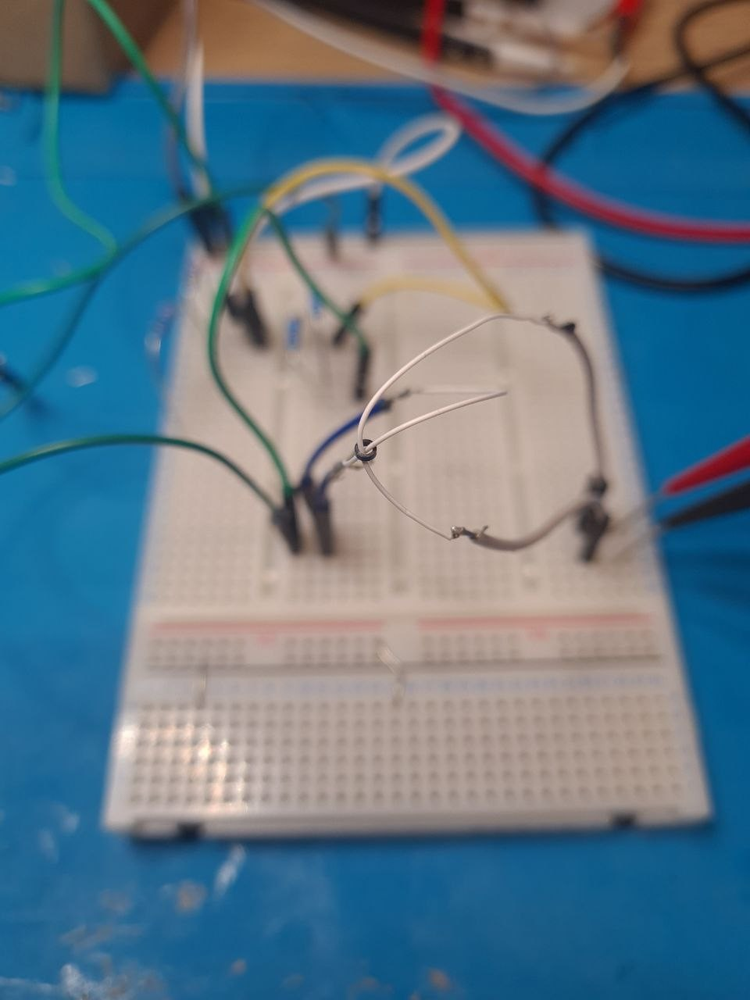
In this thread: successful experiment with factory-made ferrite core memory (1 bit for now!), a brief explanation of the experiment, and failed attempts at making a core (so you wouldn't have to try it)
Original thread🧵 go~
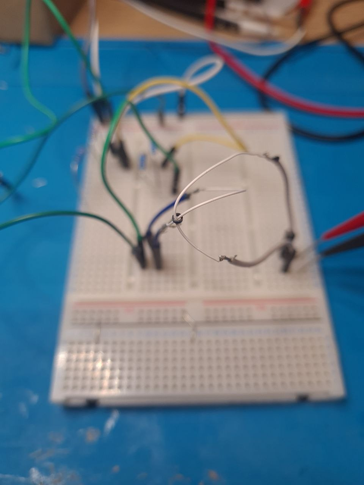
If you didn't know, magnetic-core memory used to be the most commonly used previous generation of memory before SRAM and DRAM integrated circuits stole its market share, with a promise of cheap and dense memory.
The foundation of the core memory is a core. Simply put, it is a tiny ring of a ferromagnetic material, a mixture of iron oxide with other metal oxides, that can be magnetized and de-magnetized.
As you might remember from a physics textbook, an electric current generates a magnetic field, and the direction of the current changes the orientation of the magnetic field. If we let current through the core in one direction, it will magnetize the core one way; if we let the current in the opposite direction, it will magnetize the core in a different way.
Find a way to magnetize, read the magnetization of the core, and address thousands of the cores - and you get yourself RAM, or computer memory.
The most advanced ferrite core memory had millions of cores!
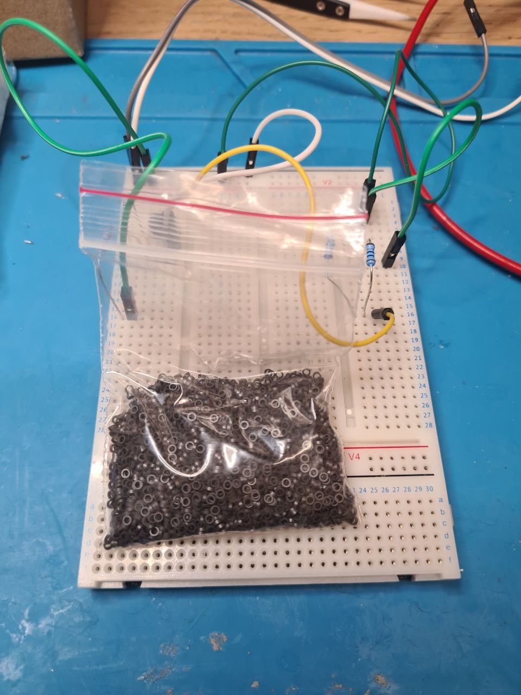
This specific type of core can be magnetized when a current of 0.3-0.5A passes through it. Ohm's law says that if the voltage we supply is 5V, we need our circuit to have the resistance of 10 Ohms to reach this current.
But we don't really need to supply this current all the time! The core changes magnetization really quick, so we need something that would generate a short pulse. Things that generate short pulses aren't great at dealing with high currents (0.5A is 20 times higher than what Arduino can handle), so we need a simple switch to control the current.
I am basically using a textbook circuit with a popular transistor 2N2222 that can handle currents up to 0.8A. It doesn't look super pretty on the bread board, and the reality is different from the model, so the current I see from the 5V supply is only 0.250A.
I pump the voltage up to 12V and smell the magic smoke coming out of the transistor. Of course it cannot handle this much emitter-base voltage, and dies.
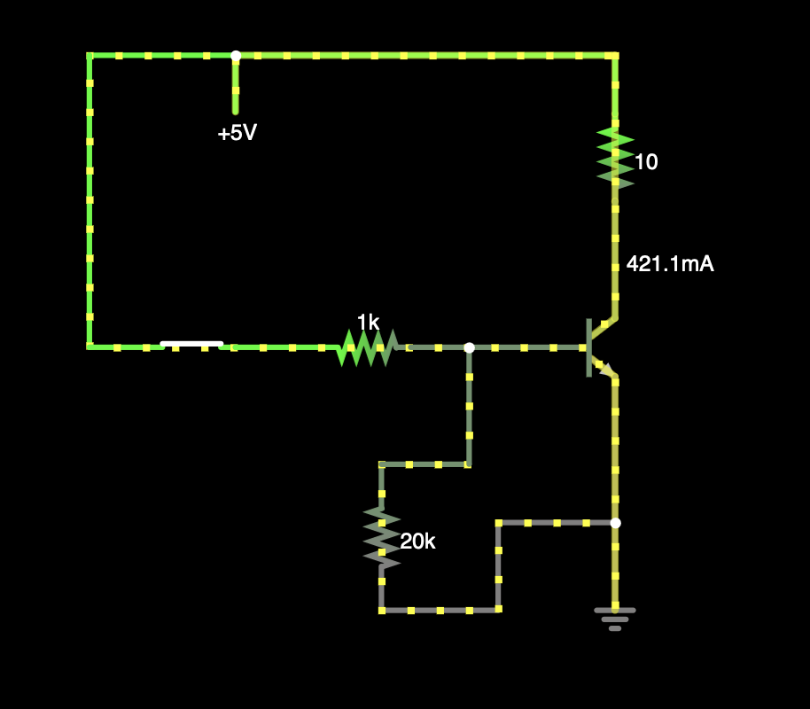 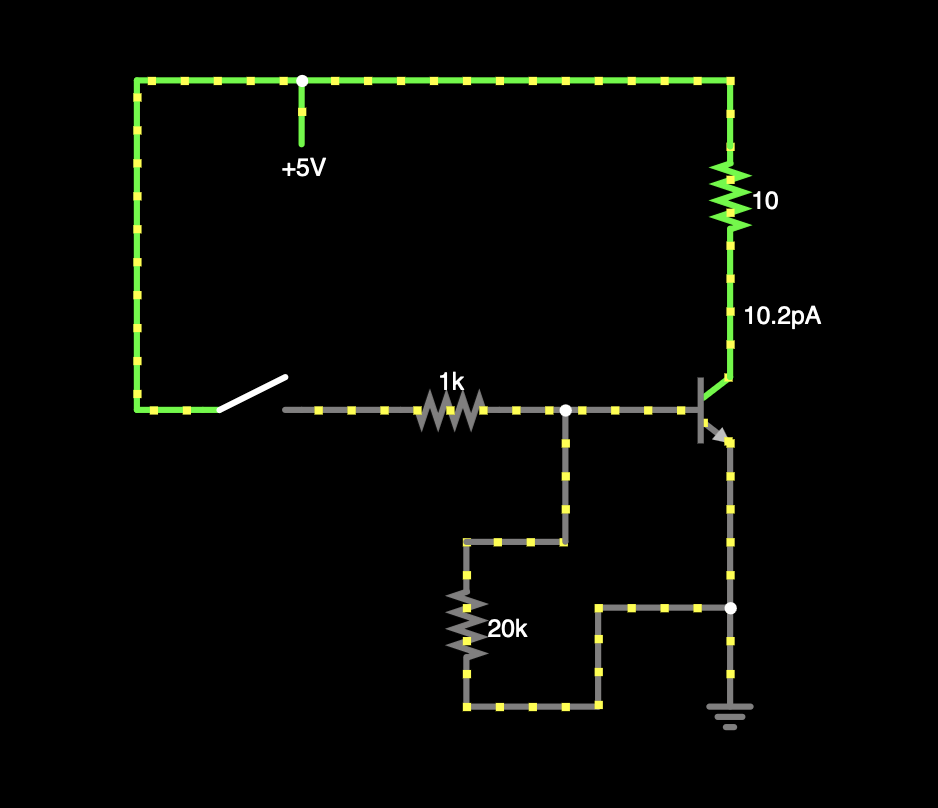 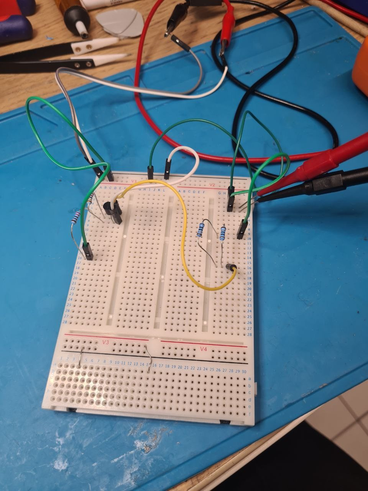
I bring out Arduino as the easiest thing I can use to supply 5V (and send short impulses). Now the circuit has two power sources: 5V for the transistor switching, and 12V for the core operations.
Now I can send the current through the core and magnetize/demagnetize it. Recording bits into memory has never been easier.
How do I read it back, though?
I have an oscilloscope connected to the second wire going through the core. The oscilloscope is basically a very precise voltmeter that can chart the voltage over time.
When we send the pulse through the core, and the core was magnetized in the same direction as it would be now, we will see a 500ns voltage spike followed by constant 40mV - our core becomes a poor tiny transformer.
If the core was magnetized in the opposite direction to our current, it'll require extra energy to reach the same state, which will cause changes in the voltage pattern. In fact, there are two voltage patterns, depending on how the core was magnetized!
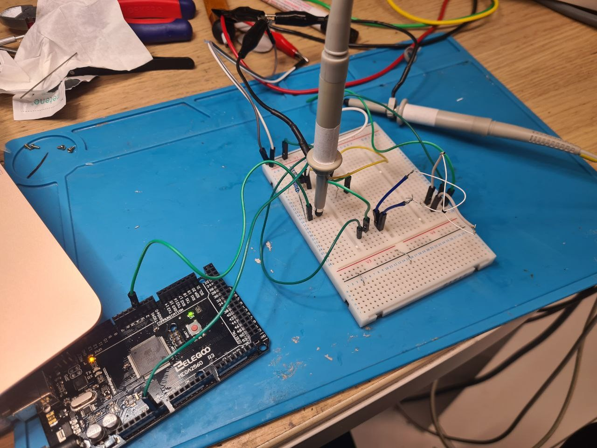 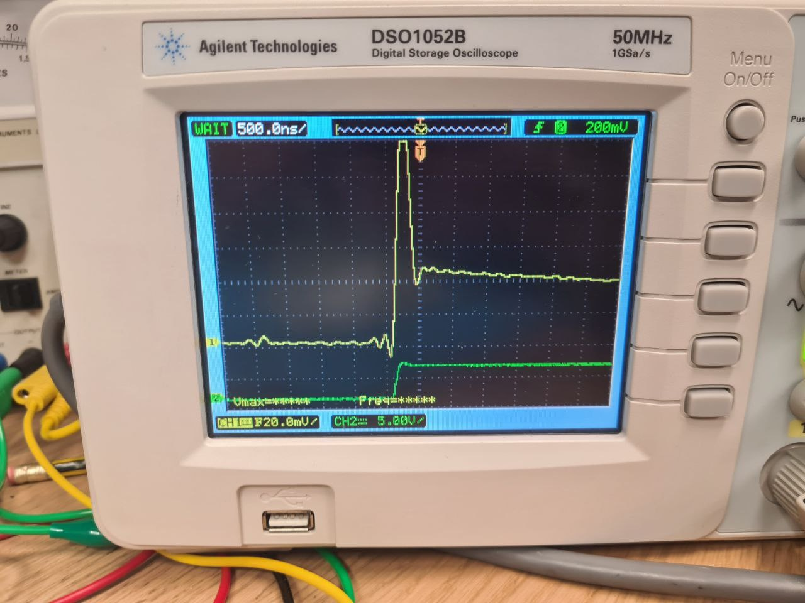 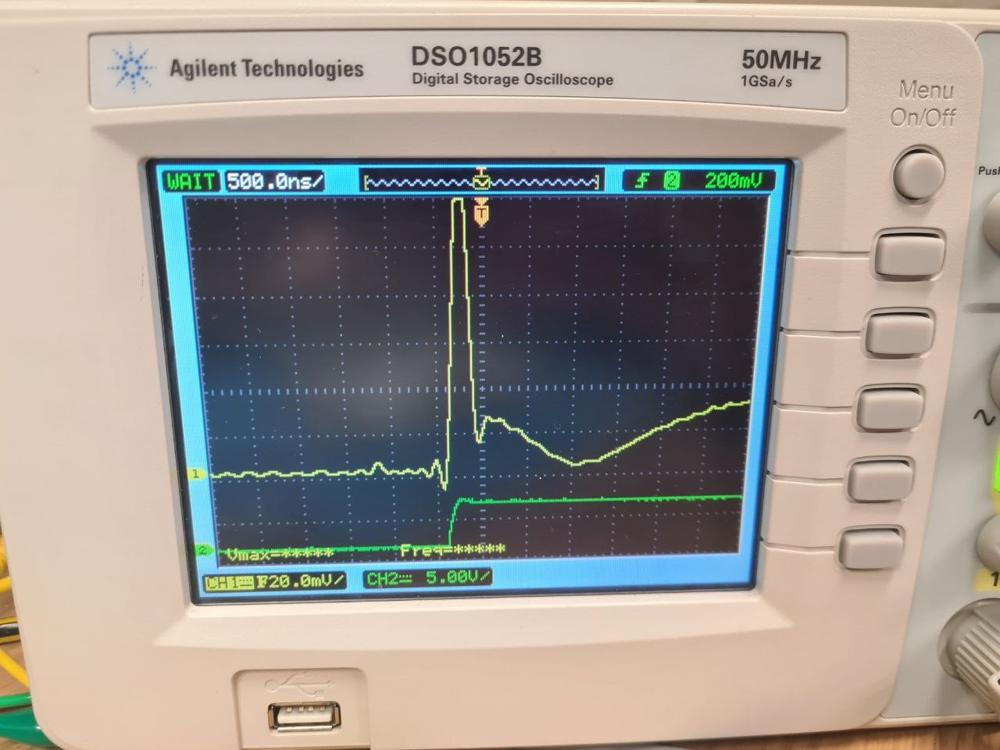 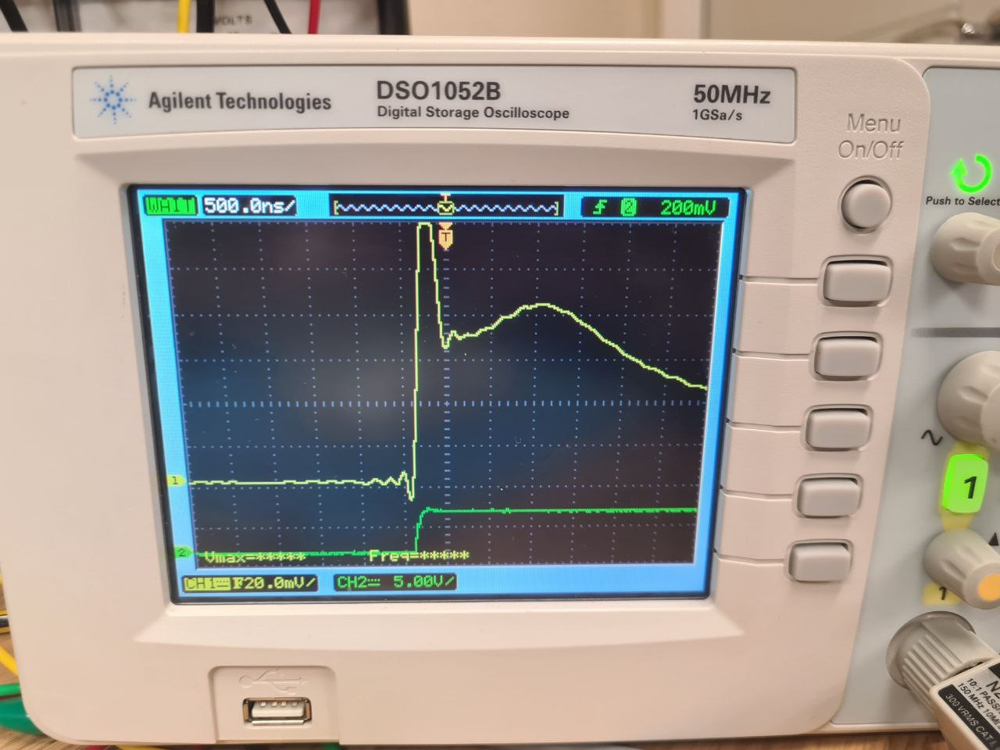
And so we have it. A tiny bit of magnetic material storing a single bit of data, we can record the data by passing the current in different directions, and we can read the data back by passing the known current through the core and seeing if there are any dips/hills in the voltage indicating that the core was pre-magnetized differently.
There are clever tricks about arranging the bits into grid and adding an extra wire to simplify "refresh" cycle of the memory after reading the bit out of it. I recommend videos by CuriousMarc if you want a great demonstration of the core RAM, but today I want to talk about other aspect of the core RAM making at home, which is a more interesting aspect to me:
Can we make the cores at home?
Those "Ferrites" I keep talking about are just a special type of ceramics. Iron oxide, zinc oxide and manganese oxide are mixed and baked at really high temperatures until the ferrite ceramics is formed. Its magnetic properties are all weird, so its usually ground into powder and pressed into desired shape.
Obviously, we cannot replicate this at home. But we could mix iron oxide with clay and bake it, getting a material with SOME magnetic properties. The best I could manage was 1:1 mixture of Fe3O4 and clay - and even so, it is hard to work with (aka shape). It has strong magnetic properties, but there was no way I could magnetize/demagnetize such a large chunk of magnetic material with measly 0.5A applied for a microsecond.
I was about to give up on the idea, when I heard about "twistor memory". Twistor and plated-wire memory are a bit irrelevant here, but the patents for these say something awesome:
"Wrap a magnetic tape around a wire, and you'll get yourself a ferrite core."
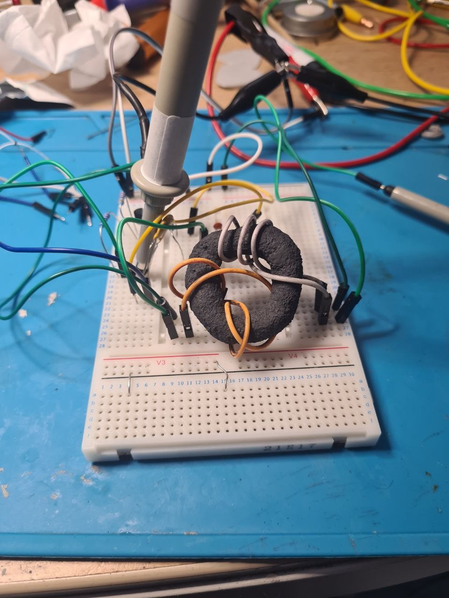
Before you get your hopes high, I will tell you: it didn't work as a drop-in replacement for the cores I have. It has SOME ferromagnetic properties, but it requires further experiments with figuring out the magnetic properties of the "cores", and I need a completely different experiment rig for that.
The first thing I have tried was a steel wire with magnetic tape wound around it (check out links in my profile if you haven't seen the DIY tape experiment). It didn't work, maybe because steel is ~bad as a magnetic material. Maybe the ring was too large and I need more current.
One of the twistor patents mentioned using nickel, it has better magnetic properties. I repeated the experiment with "nickel wire", but I did not see any difference. My "nickel" might be not nickel at all, as it shows zero magnetic properties.
The last thing I've tried was avoiding any "core" of the core, and just wrapping the magnetic tape around the write and sense wires directly. No dice.
I'll research more.
</thread>
 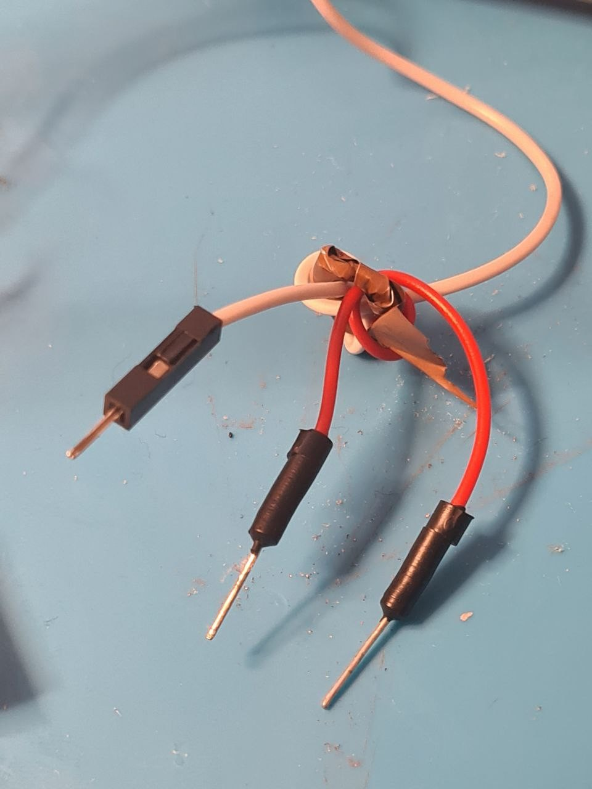
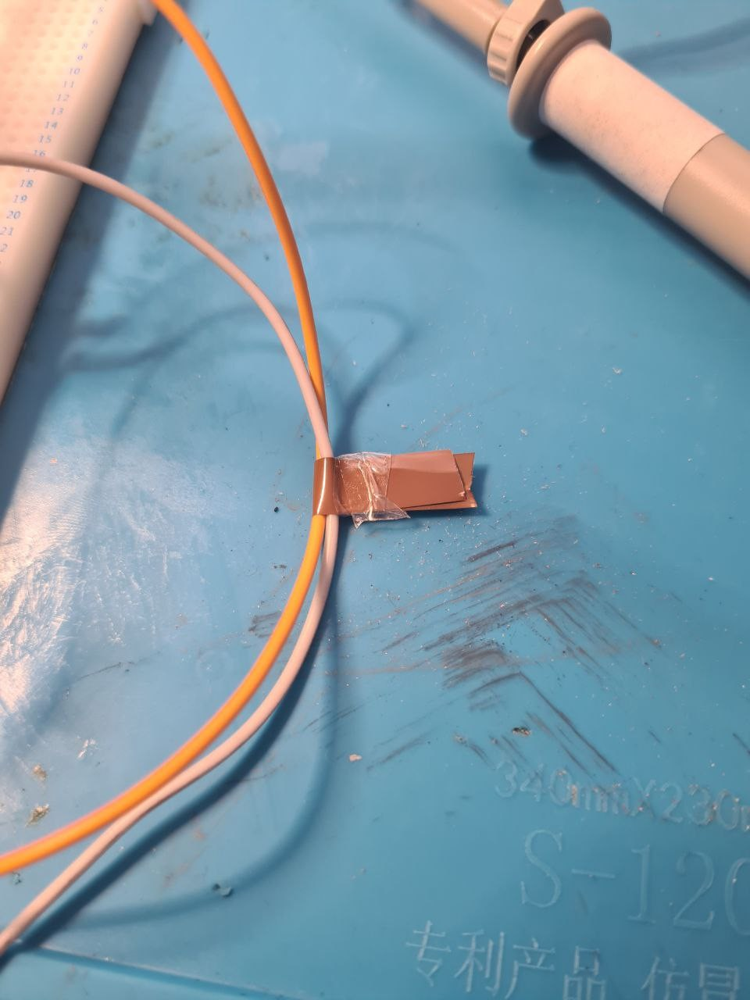
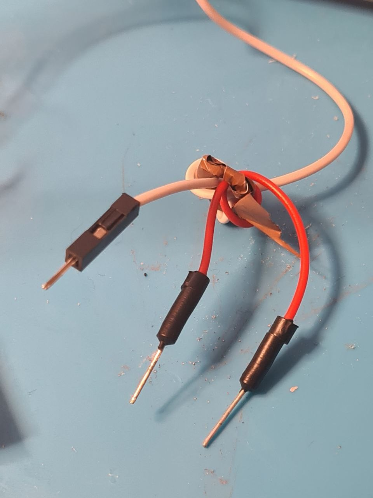
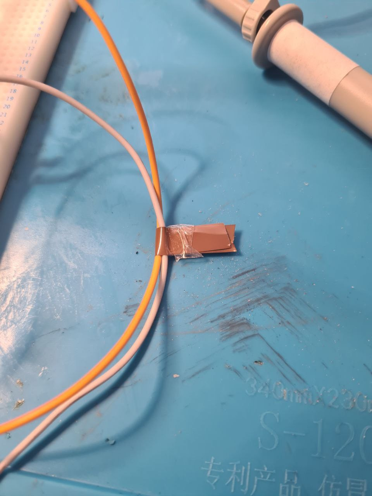